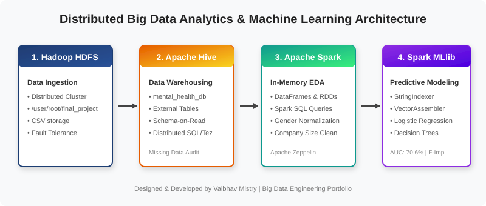
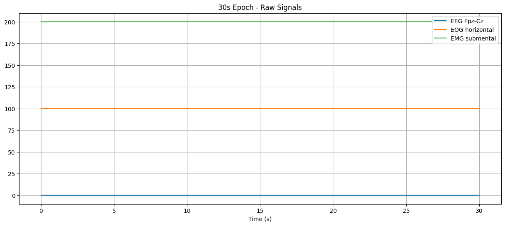

Architecting Scalable
Data Systems & Deep Learning
Big Data Engineer • Machine Learning Specialist • Full-Stack Developer
Specialized in engineering high-throughput distributed pipelines on Apache Spark, Hive, and Hadoop HDFS, building deep neural networks for temporal biosignal classification (1D-CNN + BiLSTM), and delivering production-ready full-stack software.
Flagship Engineering Projects
Production-grade systems bridging distributed data engineering, deep neural biosignal processing, and enterprise web architecture.
Workplace Mental Health Big Data Analytics
Distributed multi-stage data engineering and predictive modeling pipeline. Ingests raw surveys to Hadoop HDFS, executes schema auditing & demographic analysis with Apache Hive, and builds Spark MLlib classifiers.

Automated Sleep Stage Classification from Biosignals
Hybrid 1D-CNN + Bidirectional LSTM neural network classifying multi-channel Polysomnography (EEG, EOG, EMG) recordings into clinical sleep stages with 84.6% accuracy and 0.82 Cohen’s Kappa.

Trade Finance Guarantee Management System
Corporate trade banking application streamlining the issuance, lifecycle tracking, and validation of bank guarantees. Features a bulk file upload ingestion engine and decoupled Service Layer pattern.
Trinity Fine Dining & Lounge Web Application
Responsive single-page web experience showcasing interactive menu browsing, category-based meal filtering, and online table reservations with zero heavy external framework dependencies.
Interactive Engineering Console v2.1
Type help to list commands, or select presets above to inspect repositories, models, and architectures.
Live Biosignal Simulator
Real-time visual waveform generator demonstrating neural frequency bands processed by the 1D-CNN + BiLSTM model.
Technical Arsenal
Core engineering toolset deployed across distributed systems, neural networks, and web services.
Big Data & Analytics
Distributed Architecture- Apache Spark / PySparkAdvanced
- Hadoop HDFSPartitioned
- Apache HiveSchema-on-Read
- Spark MLlibPipelines
- Distributed SQLOptimized
Machine Learning & AI
Neural Modeling- TensorFlow & Keras1D-CNN / LSTM
- Biosignals (EEG/EMG)MNE-Python
- Scikit-LearnEnsembles / GBT
- Pandas & NumPyVectorized
- Matplotlib / SeabornDiagnostics
Full-Stack & Systems
Production Web- PHP 8.2+ & Laravel 11Service Layer
- JavaScript (ES6+)Modern Async
- Tailwind CSS & ViteResponsive UI
- MySQL RelationalIndexed Schema
- Git & GitHub CLICI/CD Flows
Let's Connect
Looking for a Big Data Engineer, Machine Learning Specialist, or Full-Stack Engineer? Send a transmission or connect on GitHub.